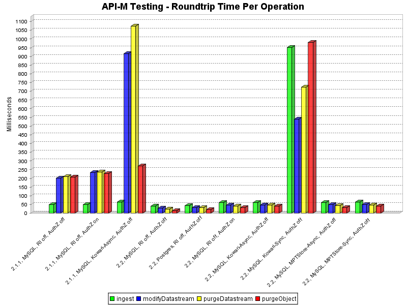
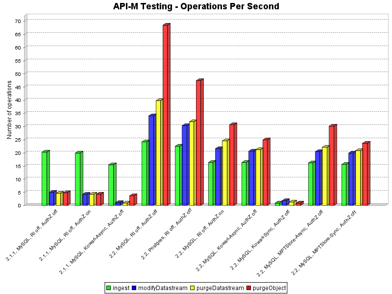

-
Introduction
With release 2.2, Fedora now runs as a proper webapp. Other
significant changes include a refactoring of the Resource Index
(bug fixes and efficiency improvements), and Servlet Filter-based
authentication. This set of tests was executed in order
to understand the impact of these changes on API-M (modify) operations,
and to compare the performance impact of various
configuration options.
-
Test Environment
Hardware (Desktop PC):
- CPU: (1) Athlon 64 3400+
- Physical Memory: 3.2GB
- Disk: (1) 7200rpm IDE
Software:
- OS: Linux 2.6.9-11 (64-bit)
- Database 1: MySQL v4.1.20 (local instance, MyISAM)
- Database 2: PostgreSQL 8.1 (local instance, fsync=off)
- Java: 1.5.0_06-b05 (64-bit)
All tests were performed on a single Fedora server with:
- 10,000 digital objects, each with:
- 4 "X" (inline XML) datastreams
- 2 "M" (managed) datastreams
- 0 disseminators
- An average FOXML size of 4kb
Each object started with four inline XML datastreams, two managed content datastreams, and no disseminators. For the purpose of consistency, the size each datastream was kept to a minimum (under 200 bytes).
Measurements were taken from the client, running on the same machine. After running each API-M request back-to-back for 10,000 objects*, an average roundtrip time was recorded for each operation.
* For tests that had an average roundtrip time of 250ms or more per operation, only 500 operations in a row were performed due to time constraints.
-
Configurations Tested
Tests were run for each of the following Fedora configurations. These configurations are shown in the same order, left to right, in the result graphs.
Fedora 2.1.1 Configurations:
- Using MySQL, with the Resource Index OFF and XACML policy enforcement disabled
- Using MySQL, with the Resource Index OFF and XACML policy enforcement enabled
- Using MySQL, with the Resource Index ON (using Kowari, with asynchronous flushing), and XACML policy enforcement disabled
Fedora 2.2 Configurations:
- Using MySQL, with the Resource Index OFF and XACML policy enforcement disabled
- Using PostgreSQL, with the Resource Index OFF and XACML policy enforcement disabled
- Using MySQL, with the Resource Index OFF and XACML policy enforcement enabled
- Using MySQL, with the Resource Index ON (using Kowari, with asynchronous flushing), and XACML policy enforcement disabled
- Using MySQL, with the Resource Index ON (using Kowari, with synchronous flushing), and XACML policy enforcement disabled
- Using MySQL, with the Resource Index ON (using MPTStore, with asynchronous flushing), and XACML policy enforcement disabled
- Using MySQL, with the Resource Index ON (using MPTStore, with synchronous flushing), and XACML policy enforcement disabled
All tests were executed:
- ...using the bundled Tomcat software as the servlet container.
- ...over regular HTTP (not SSL), with basic authentication.
-
Test Results
This graph shows the average roundtrip time for each operation, in each configuration (lower is better):

The next graph shows the same results, but in terms of operations per second (higher is better):

For raw results, please see raw-results.zip. This zip file also includes the program used to run the tests.